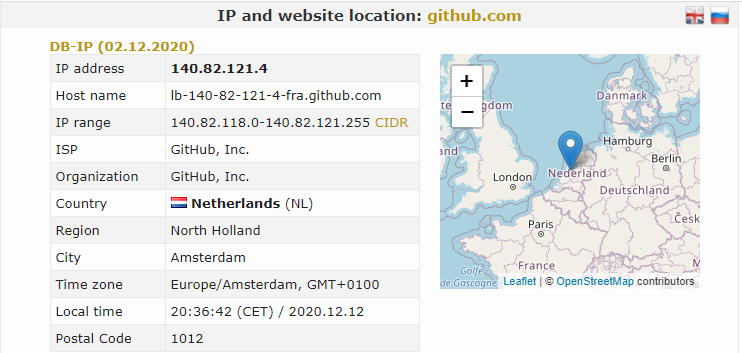

Como as aplicações rodam na Internet
A Internet é dividida em camadas onde cada camada desempenha um papel específico, as camadas são:

dá para dividir em mais camadas por exemplo acesso à rede pode ser divida em camada de enlace e camada física. Nós estamos criando aplicações para Internet, logo a única camada que realmente importa por enquanto é a camada de aplicação. Da camada de aplicação precisamos saber duas coisas:
- Arquitetura Cliente e Servidor
- Protocolo HTTP
Arquitetura Cliente e Servidor
Vocês usam essa arquitetura todos os dias quando usam a Internet, só nunca refletiram sobre isso. Quando eu digito no meu navegador github.com e dou enter ele simplesmente me aparece com a página principal do Github. Nós chamamos isso de requisição, você pediu pela página principal do Github e nas camadas mais baixas da Internet ele pega esse seu pedido para github.com e procura onde está o servidor do Github que nesse caso está na Holanda.
Quando o servidor recebe sua requisição que pede a página principal do Github ele te responde com essa página. Basicamente a Arquitetura Cliente e Servidor se resume a essa dinâmica, nós chamamos de cliente quem pede os recursos e servidor quem te entrega esses recursos. O seu navegador é um cliente o seu aplicativo de celular é um cliente. Um servidor pode responder para qualquer dispositivo desde que esse dispositivo peça as coisas de uma maneira que o servidor entenda e o servidor só entender HTTP. Vale dizer aqui que o que se aprende no desenvolvimento web pode ser exapandido para o desenvolvimento mobile e a única coisa que muda é o cliente, mas o back-end continua sendo o mesmo. O que faz uma grande distinção entre front-end e back-end, o back-end roda no servidor e o front-end roda no seu navegador ou aplicativo, então o que você baixa nas lojas de app na verdade é só o front-end da aplicação.
Mas uma aplicação web tem vários recursos, como pedir um recurso específico? O Github por exemplo tem usuários,
tem repositórios, tem times de desenvolvimento, etc. É bem simples, você pede o recurso pela url olha só:
github.com/danilolic/dev-notes Nessa url, você tem a aplicação para qual você está pedindo que é o
github.com, dentro da aplicação você está pedindo o repositório dev-notes do usuário
danilolic. Talvez isso não seja comum porque nós clicamos em botões dentro da aplicação para mudar de
página, mas na prática um link/botão está pedindo para o servidor um novo recurso da aplicação e
cada vez que muda de página você está fazendo um pedido para um computador lá na Holanda. Claro para isso
funcionar só pode existir uma pessoa chamada danilolic na aplicação, não tem como eu
entregar o repositório dev-notes se tem vários usuários com o mesmo nome porque eu não vou saber achar, então aqui
nós temos uma regra de back-end. Se eu quisesse pedir um usuário do Github poderia ser assim github.com/danilolic,
você pode tentar isso com o seu usuário. Isso vale para qualquer outra aplicação, tenta ver isso no Facebook acho
que vocês estão mais familiarizados com os recursos de lá (grupos, eventos amigos, fotos).
HTTP
As aplicações usam um protocolo chamado de HTTP. Protocolo é simplesmente uma regra que deve ser respeitada, por exemplo, para falar precisa levantar a mão, esse é um protocolo clássico das escolas. Nós seguimos vários protocolos no dia a dia e os computadores também. Nós usamos o HTTP como protocolo de comunicação entre o cliente e o servidor e se o cliente não respeitar as regras do HTTP o servidor não vai saber como responder ele, pode não ser tão importante como usuário já que os navegadores fazem isso para você, mas é importante como desenvolvedor. O HTTP não é só para pedir recursos para o servidor, na verdade tem uma sigla muito comum usada para descrever o que nós podemos fazer com um recurso do servidor, essa sigla é o C.R.U.D que significa:
- C - CREATE (criar)
- R - READ (ler)
- U - UPDATE (atualizar)
- D - DELETE (deletar)
- POST - CREATE
- GET - READ
- PUT - UPDATE
- DELETE - DELETE